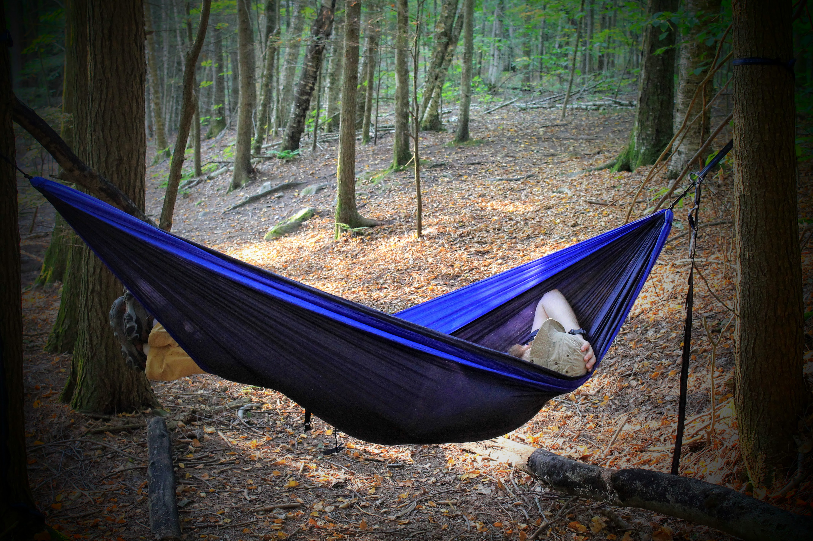

Personal field notes

Tal Kachman
Lesser adventures of a curious mind
By day, I teach machines to argue and play games. By everything else, I chase pins on maps and the bottoms of glasses and plates in places I can't always pronounce. Sometimes I even pick up the camera and take some shots of it.
For the academic work, there's cerebrnita.com.